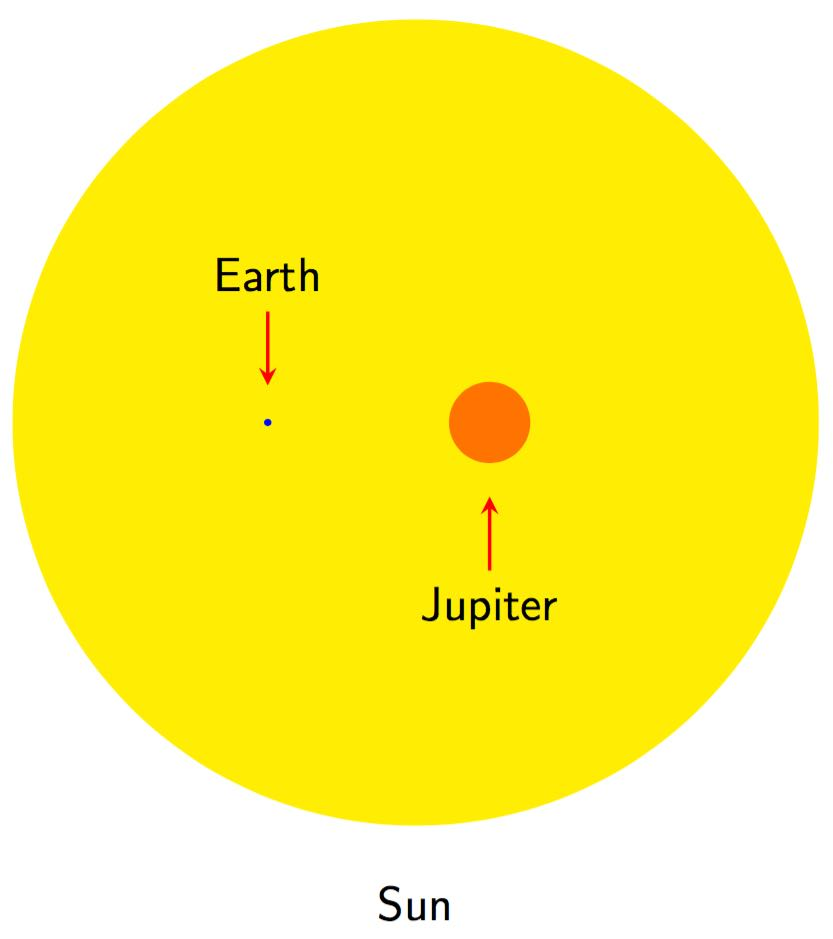

Behind the aesthetics of the orrery there is an attempt to include some science in the application. The orbital periods of each planet are approximately to scale. Mercury is chosen to act as the reference point in this case, with its actual orbital period of approximately 0.2 years scaled to 1 second in the application. Mercury in fact has an orbital period closer to a quarter of a year, but the values are rounded to 1.d.p. in this application for simplicity. Me The periods of the other planets are then set relative to this, with Venus (orbital period of ~0.6 years) performing a full rotation about the Sun once every 3 seconds, the Earth once every 5 seconds, and so on.
Neither the planets' sizes nor their orbital radii are drawn to scale in this application. This is a commonality among orreries, and the figure below demonstrates why it is not practical to provide a reasonable representation of the Sun and planets when this is attempted. Instead the planets are all shown as circles of the same size, with the Sun appearing slightly larger to show that it is distinct from them. In addition, the orbital radii are depicted as increasing in regular increments, and the orbital paths shown as circular when in reality they are elliptical.
The relative sizes of the Earth, Jupiter and the Sun. Values for the radii taken from Wikipedia. The info panel of the main application window provides six pieces of basic information about each planet. The data for this, and for the orbital periods used to define the motion of the planets, comes from each of their Wikipedia pages. The following describes this data, and the reasons for it being formatted the way it is. All numbers are rounded to 3.s.f. for clarity, except for the number of moons and those rotation periods that are given in hours, minutes and seconds instead of days.
The application displays six key pieces of information about each planet, formatted for clarity: